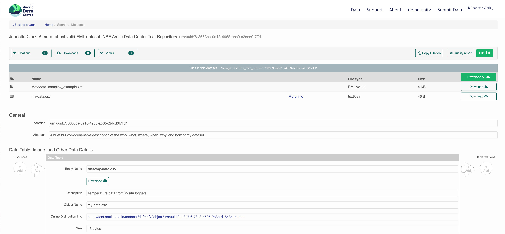

17 Programming Metadata and Data Publishing
17.1 Learning Objectives
In this lesson, you will learn:
- How to write standardized metadata in R
- How to publish data packages to the Arctic Data Center programmatically
For datasets with a relatively small number of files that do not have many columns, the Arctic Data Center web form is the most efficient way to create metadata. However, for datasets that have many hundreds of files with a similar structure, or a large number of attributes, programmatic metadata creation may be more efficent. Creating metadata and publishing programmatically also allows for more a streamlined approach to updating datasets that have been published. By incorporating this documentation and publishing approach into your scientific workflow, you can improve the reproducibility and transparency of your work.
17.2 Creating Metadata
17.2.1 About Ecological Metadata Language (EML)
EML, the metadata standard that the Arctic Data Center uses, looks like this:
<?xml version="1.0" encoding="UTF-8"?>
<eml:eml packageId="df35d.442.6" system="knb"
xmlns:eml="eml://ecoinformatics.org/eml-2.1.1">
<dataset>
<title>Improving Preseason Forecasts of Sockeye Salmon Runs through
Salmon Smolt Monitoring in Kenai River, Alaska: 2005 - 2007</title>
<creator id="1385594069457">
<individualName>
<givenName>Mark</givenName>
<surName>Willette</surName>
</individualName>
<organizationName>Alaska Department of Fish and Game</organizationName>
<positionName>Fishery Biologist</positionName>
<address>
<city>Soldotna</city>
<administrativeArea>Alaska</administrativeArea>
<country>USA</country>
</address>
<phone phonetype="voice">(907)260-2911</phone>
<electronicMailAddress>mark.willette@alaska.gov</electronicMailAddress>
</creator>
...
</dataset>
</eml:eml>Earlier in this course we learned how to create an EML document like this using the Arctic Data Center web form. Now, we will learn how to create it using R. This can be especially useful to decrease the repetitiveness of metadata creation when you have many files with the same format, files with many attributes, or many data packages with a similar format.
When you create metadata using the web form, the form creates valid metadata for you. Valid, structured metadata is what enables computers to predictably parse the information in a metadata document, enabling search, display, and even meta-analysis. When we create metadata in R, there aren’t as many user-friendly checks in place to ensure we create valid EML, so we need to understand the structure of the document more completely in order to make sure that it will be compatible with the Arctic Data Center.
Let’s look at a simplified version of the example above:
<?xml version="1.0" encoding="UTF-8"?>
<eml:eml packageId="df35d.442.6" system="knb"
xmlns:eml="eml://ecoinformatics.org/eml-2.1.1">
<dataset>
<title>Improving Preseason Forecasts of Sockeye Salmon Runs through
Salmon Smolt Monitoring in Kenai River, Alaska: 2005 - 2007</title>
<creator id="1385594069457">
<individualName>
<givenName>Mark</givenName>
<surName>Willette</surName>
</individualName>
</creator>
...
</dataset>
</eml:eml>EML is written in XML (eXtensisble Markup Language). One of the key concepts in XML is the element. An XML element is everything that is encompassed by a start tag (<...>) and an end tag (</...>). So, a simple element in the example above is <surName>Willette</surName>. The name of this element is surName and the value is simple text, “Willette”. Each element in EML has a specific (case sensitive!) name and description that is specified in the schema. The description of the surName element is: “The surname field is used for the last name of the individual associated with the resource. This is typically the family name of an individual…” The EML schema specifies not only the names and descriptions of all EML elements, but also certain requirements, like which elements must be included, what type of values are allowed within elements, and how the elements are organized. An EML document is valid when it adheres to all of the requirements speficied in the EML schema.
You’ll notice that some elements, rather than having a simple value, instead contain other elements that are nested within them. Let’s look at individualName.
This element is a collection of other elements (sometimes referred to as child elements). In this example, the individualName element has a givenName and a surName child element. We can check the requirements of any particular element by looking at the schema documents, which includes some helpful diagrams.
The diagram in the individualName section of the schema looks like this:

This shows that within individualName there are 3 possible child elements: salutation, givenName, and surName. The yellow circle icon with stacked papers tells you that the elements come in series, so you can include one or more of the child elements (as opposed to a switch symbol, which means that you choose one element from a list of options). The bold line tells you that surName is required, and the 0..inf indicates that you can include 0 or more salultation or givenName elements.
So, to summarize, EML is the metadata standard used by the Arctic Data Center. It is written in XML, which consists of a series of nested elements. The element definitions, required elements, and structure are all defined by a schema. When you write EML, in order for it to be valid, your EML document must conform to the requirements given in the schema.
17.2.2 Metadata in R: a simple example
Now, let’s learn how the EML package can help us create EML in R.
First, load the EML package in R.
The EML package relies on named list structures to generate name-value pairs for elements. “Named list structures” may sound unfamiliar, but they aren’t dissimilar from data.frames. A data.frame is just a named list of vectors of the same length, where the name of the vector is the column name. In this section, we will use the familiar $ operator to dig down into the named list structure that we generate.
To show how this works, let’s create the individualName element, and save it as an object called me. Remember the schema requirements - indvidualName has child elements salutation, givenName, and surName. At least surName is required.
## $givenName
## [1] "Jeanette"
##
## $surName
## [1] "Clark"So we have created the contents of an individualName element, with child elements givenName and surName, and assigned the values of those child elements to my name.
This might look confusing, hard to remember, and if you aren’t intimitely familiar with the EML schema, you are probably feeling a little intimidated. Luckily the EML package has a set of helper list constructor functions which tell you what child elements can be used in a parent element. The helper functions have the format eml$elementName(). When combined with the RStudio autocomplete functionality, the whole process gets a lot easier!
We can then use this object me, which represents the individualName element, and insert it into a larger EML document.
At the top level of a complete EML document are the packageId and system elements. This is how your document can be uniquely identified within whatever system manages it. The packageId element typically contains the DOI (Digital Object Identifier) or other identifier for the dataset. Nested within the top level is the dataset element. All EML documents must have, at a minimum, a title, creator, and contact, in addition to the packageId and system.
Let’s create a minimal valid EML dataset, with an arbitrary packageId and system.
doc <- list(packageId = "dataset-1", system = "local",
dataset = eml$dataset(title = "A minimial valid EML dataset",
creator = eml$creator(individualName = me),
contact = eml$contact(individualName = me)))Unlike the web editor, in R there is nothing stopping you from inserting arbitrary elements into your EML document. A critical step to creating EML is validating your EML document to make sure it conforms to the schema requirements. In R this can be done using the eml_validate function.
## [1] TRUE
## attr(,"errors")
## character(0)We can write our EML using write_eml.
Here is what the written file looks like:
<?xml version="1.0" encoding="UTF-8"?>
<eml:eml xmlns:eml="eml://ecoinformatics.org/eml-2.1.1" xmlns:xsi="http://www.w3.org/2001/XMLSchema-instance" xmlns:stmml="http://www.xml-cml.org/schema/stmml-1.1" packageId="id" system="system" xsi:schemaLocation="eml://ecoinformatics.org/eml-2.1.1/ eml.xsd">
<dataset>
<title>A minimial valid EML dataset</title>
<creator>
<individualName>
<givenName>Jeanette</givenName>
<surName>Clark</surName>
</individualName>
</creator>
<contact>
<individualName>
<givenName>Jeanette</givenName>
<surName>Clark</surName>
</individualName>
</contact>
</dataset>
</eml:eml>17.2.3 Validation Errors
One of the hardest parts about creating EML in R is diagnosing validation errors. I won’t get into too much detail, but here is a simple example. The eml$... family of helpers can help prevent validation errors, since they have a set list of arguments which are allowed. Here, I bypass the eml$dataset() helper function to show what the error looks like.
doc <- list(packageId = "dataset-1", system = "local",
dataset = list(title = "A minimial valid EML dataset",
creator = eml$creator(individualName = me),
contact = eml$contact(individualName = me),
arbitrary = "This element isn't in the schema"))
eml_validate(doc)## [1] FALSE
## attr(,"errors")
## [1] "Element 'arbitrary': This element is not expected. Expected is one of ( references, alternateIdentifier, shortName, title )."This error essentially says that the element arbitrary is not expected, and gives you a hint of some elements that were expected. Validation errors can be tricky, especially when there are lots of them. Validate early and often!
17.2.4 Metadata in R: A more complete example
As you might imagine, creating a complete metadata record like what is shown on this page would be pretty tedious if we did it just using the generic list or eml$... helpers, since the nesting structure can be very deep.
The EML package has a set of higher level helper functions beginning with set_ that create some of the more complex elements.
To demonstrate the use of these we are going to create an EML document that contains the following information:
- title
- creator and contact
- abstract
- methods
- geographic and temporal coverage
- description of a tabular data file and a script
We will edit these elements using a mix of helpers and generic techniques.
To get set up, navigate to this dataset and download the CSV file and the R script. Put them in a directory called files that is a sub-directory of the location of this RMarkdown file.
17.2.4.1 Title, creator, contact
To start, lets create a basic EML skeleton using our example above, but with more information in the creator and contact information besides just my name.
# eml creator and contact have identical schema requirements (both fall under `responsibleParty`)
me <- eml$creator(individualName = eml$individualName(givenName = "Jeanette",
surName = "Clark"),
organizationName = "National Center for Ecological Analysis and Synthesis",
electronicMailAddress = "jclark@nceas.ucsb.edu",
userId = list(directory = "https://orcid.org",
userId = "https://orcid.org/0000-0003-4703-1974"))
doc <- list(packageId = "dataset-1", system = "local",
dataset = eml$dataset(title = "A more robust valid EML dataset",
creator = me,
contact = me))Because we have used the eml$dataset helper, all of the possible sub-elements have been populated in our EML document, allowing us to easily access and edit them using R autocomplete.
17.2.4.2 Abstract
We can use this to dive down into sub-elements and edit them. Let’s do the abstract. This is a simple element so we can just assign the value of the abstract to a character string.
17.2.4.3 Methods
We can use the set_methods function to parse a markdown (or word) document and insert it into the methods section. This way of adding text is especially nice because it preserves formatting.
## $sampling
## NULL
##
## $methodStep
## $methodStep$instrumentation
## character(0)
##
## $methodStep$software
## NULL
##
## $methodStep$description
## $methodStep$description$section
## $methodStep$description$section[[1]]
## [1] "<title>Data Collection</title>\n<para>\n We collected some data and here is a description\n </para>"
##
## $methodStep$description$section[[2]]
## [1] "<title>Data processing</title>\n<para>\n Here is how we processed the data\n </para>"
##
##
## $methodStep$description$para
## list()17.2.4.4 Coverage
The geographic and temporal coverage can be set using set_coverage.
17.2.4.5 Data file: script
Information about data files (or entity level information) can be added in child elements of the dataset element. Here we will use the element otherEntity (other options include spatialVector, spatialRaster, and dataTable) to represent the R script.
First, some high level information.
doc$dataset$otherEntity <- eml$otherEntity(entityName = "files/datfiles_processing.R",
entityDescription = "Data processing script",
entityType = "application/R")We can use the set_physical helper to set more specific information about the file, like its size, delimiter, and checksum. This function automatically detects fundamental characteristics about the file if you give it a path to your file on your system.
## Automatically calculated file size using file.size("files/datfiles_processing.R")## Automatically calculated authentication size using digest::digest("files/datfiles_processing.R", algo = "md5", file = TRUE)17.2.4.6 Data file: tabular
Here we will use the element dataTable to describe the tabular data file.
As before, we set the entityName, entityDescription, and the physical sections.
doc$dataset$dataTable <- eml$dataTable(entityName = "files/my-data.csv",
entityDescription = "Temperature data from in-situ loggers")
doc$dataset$dataTable$physical <- set_physical("files/my-data.csv")## Automatically calculated file size using file.size("files/my-data.csv")## Automatically calculated authentication size using digest::digest("files/my-data.csv", algo = "md5", file = TRUE)Next, perhaps the most important part of metadata, but frequently the most difficult to document in a metadata standard: attribute level information. An attribute is a variable in your dataset. For tabular data, this is information about columns within data tables, critical to understanding what kind of information is actually in the table!
The set_attributes function will take a data.frame that gives required attribute information. This data.frame contains rows corresponding to column names (or attributes) in the dataset, and columns:
- attributeName (any text)
- attributeDefinition (any text)
- unit (required for numeric data, use
get_unitList()to see a list of standard units) - numberType (required for numeric data, one of: real, natural, whole, integer)
- formatString (required for dateTime data)
- definition (required for textDomain data)
Two other sub-elements, the domain and measurementScale, can be inferred from the col_classes argument to set_attributes.
Let’s create our attributes data.frame.
atts <- data.frame(attributeName = c("time", "temperature", "site"),
attributeDefinition = c("time of measurement", "measured temperature in degrees Celsius", "site identifier"),
unit = c(NA, "celsius", NA),
numberType = c(NA, "real", NA),
formatString = c("HH:MM:SS", NA, NA),
definition = c(NA, NA, "site identifier"))We will then use this in our set_attributes function, along with the col_classes argument, to generate a complete attributeList.
doc$dataset$dataTable$attributeList <- set_attributes(attributes = atts,
col_classes = c("Date", "numeric", "character"))As you might imagine, this can get VERY tedious with wide data tables. The function shiny_attributes calls an interactive table that can not only automatically detect and attempt to fill in attribute information from a data.frame, but also helps with on the fly validation.
Note: this requires that the shinyjs package is installed.
This produces a data.frame that you can insert into set_attributes as above.
17.2.4.7 Validating and writing the file
Finally, we need to validate and write our file.
## [1] TRUE
## attr(,"errors")
## character(0)17.3 Publish data to the Arctic Data Center test site
17.3.1 Setup and Introduction
Now let’s see how to use the dataone and datapack R packages to upload data to DataONE member repositories like the KNB Data Repository and the Arctic Data Center.
17.3.1.1 The dataone package
The dataone R package provides methods to enable R scripts to interact with DataONE to search for, download, upload and update data and metadata. The purpose of uploading data from R is to automate the repetitive tasks for large datasets with many files. For small datasets, the web submission form will certainly be simpler.
The dataone package interacts with two major parts of the DataONE infrastructure: Coordinating Nodes (or cn) and Member Nodes (or mn). Coordinating nodes maintain a complete catalog of all data and provide the core DataONE services, including search and discovery. The cn that is exposed through search.dataone.org is called the production (or PROD) cn. Member Nodes expose their data and metadata through a common set of interfaces and services. The Arctic Data Center is an mn. To post data to the Arctic Data Center, we need to interact with both the coordinating and member nodes.
In addition to the production cn, there are also several test coordinating node environments, and corresponding test member node environments. In this tutorial, we will be posting data to the test Arctic Data Center environment.
17.3.1.2 The datapack package
The datapack R package represents the set of files in a dataset as a datapack::DataPackage. This DataPackage is just a special R object class that is specified in the datapack package. Each object in that DataPackage is represented as a DataObject, another R object class specified by datapack.
When you are publishing your dataset, ideally you aren’t only publishing a set of observations. There are many other artifacts of your research, such as scripts, derived data files, and derived figures, that should be archived in a data package. Each of the types of files shown in the workflow below should be considered a data object in your package, including the metadata file that describes the individual components of your workflow.

Each of the files in the diagram above has a relationship with the other files, and using datapack you can describe these relationships explicitly and unambiguously using controlled vocabularies and conceptual frameworks. For example, we know that the fine “Image 1” was generated by “Mapping Script.” We also know that both “Image 1” and “Mapping Script” are described by the file “Metadata.” Both of these relationsips are represented in datapack using speficic ontologies. Using datapack we will create a DataPackage that represents a (very simple) scientific workflow and the data objects within it, where the relationships between those objects are explicitly described. Then, we will upload this DataPackage to a test version of the Arctic Data Center repository using dataone.
Before uploading any data to a DataONE repository, you must login to get an authentication token, which is a character string used to identify yourself. This token can be retrieved by logging into the test repository and copying the token into your R session.
17.3.1.3 Obtain an ORCID
ORCID is a researcher identifier that provides a common way to link your researcher identity to your articles and data. An ORCID is to a researcher as a DOI is to a research article. To obtain an ORCID, register at https://orcid.org.
17.3.1.4 Log in to the test repository and copy your token
We will be using a test server, so login and retrieve your token at https://test.arcticdata.io.
Once you are logged in, navigate to your Profile Settings, and locate the “Authentication Token” section, and then copy the token for R to your clipboard.

Finally, paste the token into the R Console to register it as an option for this R session. You are now logged in. But note that you need to keep this token private; don’t paste it into scripts or check it into git, as it is just as sensitive as your password.
17.3.2 Uploading A Package Using R with uploadDataPackage
Datasets and metadata can be uploaded individually or as a collection. Such a collection, whether contained in local R objects or existing on a DataONE repository, will be informally referred to as a package.
Load the libraries:
First we need to create an R object that describes what coordinating and member nodes we will be uploading our dataset to. We do this with the dataone function D1Client (DataONE client). The first argument specifies the DataONE coordinating node (in this case a test node called STAGING) and the second specifices the member node.
We’ll also create an object that only represents the member node, which is helpful for some functions.
Next, we create a DataPackage as a container for our data, metadata, and scripts using the new function. This just creates an empty object with the class DataPackage
## This package does not contain any DataObjects.We then need to add a metadata file and data file to this package. First we generate some identifiers for the objects. We’ll use the uuid scheme for all of our objects. If we were uploading to production, you would likely want use an identifier with the doi scheme for your metadata document.
data_id <- generateIdentifier(mn, scheme = "uuid")
script_id <- generateIdentifier(mn, scheme = "uuid")
metadata_id <- generateIdentifier(mn, scheme = "uuid")Now we need to modify our EML document to include these identifiers. This increases the accessibility of the files in our dataset.
First read in the EML that we created earlier.
Let’s replace the arbitrary packageId and system that we set in the example above to reflect the identifier we created for this package, and the system we are uploading the package to.
Now let’s add a distribution URL to the physical section of our entity information. All of the distribution URLs look something like this https://test.arcticdata.io/metacat/d1/mn/v2/object/urn:uuid:A0cc95b46-a318-4dd1-8f8a-0e6c280e1d95, where https://test.arcticdata.io/metacat/d1/mn/v2/ is the member node end point, and urn:uuid:A0cc95b46-a318-4dd1-8f8a-0e6c280e1d95 is the identifier of the object.
We can easily construct this URL using the paste0 function, and insert it into the physical section of the dataTable element.
# set url for csv
doc$dataset$dataTable$physical$distribution$online$url <- paste0(mn@endpoint,
"object/",
data_id)
# set url for script
doc$dataset$otherEntity$physical$distribution$online$url <- paste0(mn@endpoint,
"object/",
script_id)
write_eml(doc, "files/complex_example.xml")Now we have a full metadata document ready to be uploaded. We now need to add our files to the DataPackage.
First, let’s create a new DataObject, which is another object class specific to datapack. Our metadata file, data file, and script will all need to be added as a DataObject. Remember that all files in a package are considered data objects, not just the ones that we you traditionally think of as being “data”.
The format argument specifies the type of file, and should match one of the list of DataONE formatIds (listed in the Id field) here.
# Add the metadata document to the package
metadataObj <- new("DataObject",
id = metadata_id,
format ="eml://ecoinformatics.org/eml-2.1.1",
filename = "files/complex_example.xml")After creating the DataObject that represents the metadata file, we add it to the data package using addMember.
## Members:
##
## filename format mediaType size identifier modified local
## comple...le.xml eml...1.1 NA 5841 urn:u...7ffd1 n y
##
## Package identifier: NA
## RightsHolder: NA
##
##
## This package does not contain any provenance relationships.We add the data file and the script similarly. The only difference is in the addMember function we have to set the mo (metadata object) argument equal to the DataObject that represents the metadata file. Adding our csv file to the package this way not only adds the file to the data package, but it also specifies that the csv is described by the metadata.
# Add our data file to the package
sourceObj <- new("DataObject",
id = data_id,
format = "text/csv",
filename = "files/my-data.csv")
dp <- addMember(dp, sourceObj, mo = metadataObj)
dp## Members:
##
## filename format mediaType size identifier modified local
## my-data.csv text/csv NA 45 urn:u...4a4aa n y
## comple...le.xml eml...1.1 NA 5841 urn:u...7ffd1 n y
##
## Package identifier: NA
## RightsHolder: NA
##
##
## Relationships (updated):
##
## subject predicate object
## 1 complex_example.xml cito:documents my-data.csv
## 2 my-data.csv cito:isDocumentedBy complex_example.xmlNext we add our script in the same way.
# Add our script to the package
scriptObj <- new("DataObject",
id = script_id,
format = "application/R",
filename = "files/datfiles_processing.R")
dp <- addMember(dp, scriptObj, mo = metadataObj)
dp## Members:
##
## filename format mediaType size identifier modified local
## my-data.csv text/csv NA 45 urn:u...4a4aa n y
## comple...le.xml eml...1.1 NA 5841 urn:u...7ffd1 n y
## datfil...sing.R app...n/R NA 5625 urn:u...38ed9 n y
##
## Package identifier: NA
## RightsHolder: NA
##
##
## Relationships (updated):
##
## subject predicate object
## 1 complex_example.xml cito:documents my-data.csv
## 3 complex_example.xml cito:documents datfiles_processing.R
## 4 datfiles_processing.R cito:isDocumentedBy complex_example.xml
## 2 my-data.csv cito:isDocumentedBy complex_example.xmlYou can also specify other information about the relationships between files in your data package by adding provenance information. Here, we specify that the R script (program) uses the csv (sources) by including them as the specified arguments in the describeWorkflow function.
## Members:
##
## filename format mediaType size identifier modified local
## my-data.csv text/csv NA 45 urn:u...4a4aa n y
## comple...le.xml eml...1.1 NA 5841 urn:u...7ffd1 n y
## datfil...sing.R app...n/R NA 5625 urn:u...38ed9 n y
##
## Package identifier: NA
## RightsHolder: NA
##
##
## Relationships (updated):
##
## subject predicate object
## 9 _e193edd0...9ae871047 rdf:type prov:Association
## 8 _e193edd0...9ae871047 prov:hadPlan datfiles_processing.R
## 1 complex_example.xml cito:documents my-data.csv
## 3 complex_example.xml cito:documents datfiles_processing.R
## 4 datfiles_processing.R cito:isDocumentedBy complex_example.xml
## 10 datfiles_processing.R rdf:type provone:Program
## 2 my-data.csv cito:isDocumentedBy complex_example.xml
## 5 my-data.csv rdf:type provone:Data
## 11 urn:uuid:...c4ff5b5fb dcterms:identifier urn:uuid:...c4ff5b5fb
## 7 urn:uuid:...c4ff5b5fb rdf:type provone:Execution
## 6 urn:uuid:...c4ff5b5fb prov:qual...sociation _e193edd0...9ae871047
## 12 urn:uuid:...c4ff5b5fb prov:used my-data.csvEach object in a data package has an access policy. There are three levels of access you can grant either to individual files, or the package as a whole.
- read: the ability to view when published
- write: the ablity to edit after publishing
- changePermission: the ability to grant other people read, write, or changePermission access
Here, I give my colleague (via his ORCID) “read” and “write” permission to my entire data package using addAccessRule.
dp <- addAccessRule(dp,
subject = "http://orcid.org/0000-0003-0077-4738",
permission = c("read","write"),
getIdentifiers(dp))Finally, we upload the package to the test server for the Arctic Data Center using uploadDataPackage. This function takes as arguments d1c (the DataONE client which specifies which coordinating and member nodes to use), dp (the data package itself), whether you want the package to include public read access (public = TRUE).
You can now search for and view the package at https://test.arcticdata.io:
